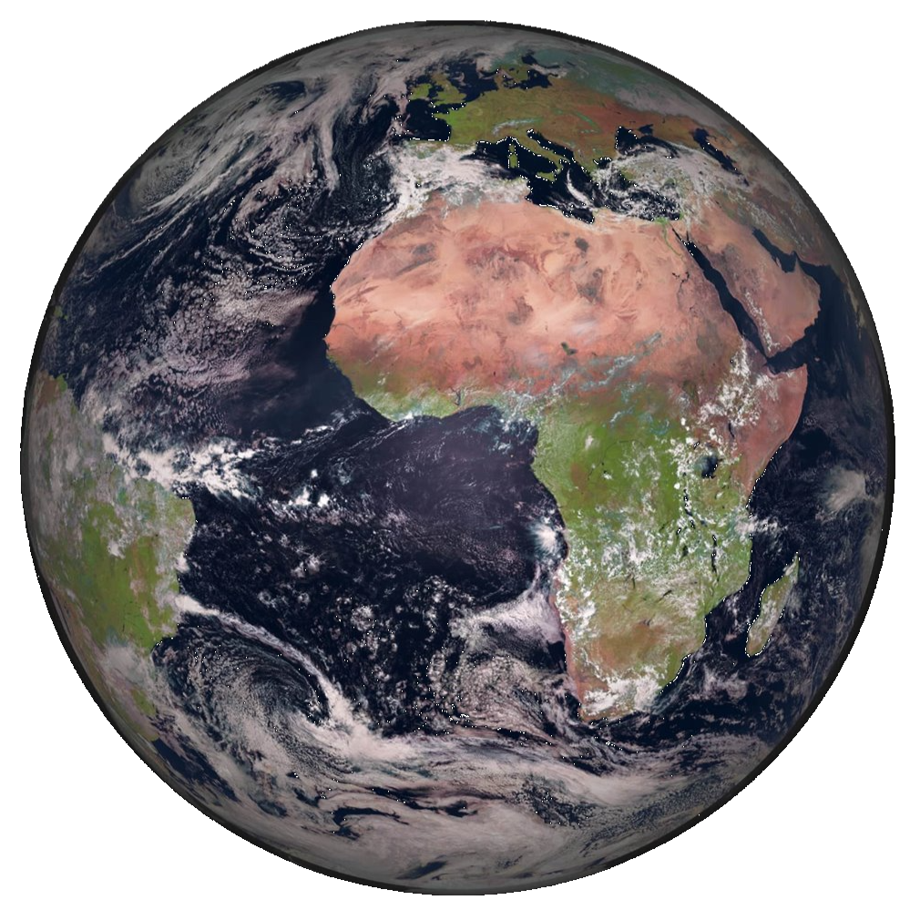

Volver
|  |
DefiniciónTierra. Por simple que pueda parecer o familiar que pueda resultarnos, el nombre de nuestro planeta, al igual que el resto de planetas, también tiene un origen en la mitología griega. Así, en este caso, los antiguos griegos denominaron a la Tierra en honor a la diosa Gea, la cual era adorada como la creadora del universo y la madre, tanto de los dioses primordiales y los titanes, como de los primeros humanos. Al igual que sucede con el resto de planetas del sistema solar, posteriormente los romanos la bautizaron con el nombre de su diosa equivalente, Terra, el cual ha transcendido hasta el presente con las evidentes adaptaciones. Características principales del planeta TierraNuestro hogar, la Tierra, es el quinto planeta más grande y el tercero en cercanía al Sol del sistema solar. También se trata del planeta más grande de los 4 planetas rocosos. Entre otras cualidades como la rotación de su eje respecto a la elíptica, la composición de su atmósfera rica en oxígeno o la presencia de agua líquida, esta distancia de la Tierra al Sol -situada dentro de la zona de habitabilidad de una estrella- es la responsable de que nuestro planeta sea el único del sistema solar en el que hasta el momento se haya encontrado vida. Los vastos océanos de la Tierra proporcionaron un lugar conveniente para que comenzara la vida hace unos 3.800 millones de años. La Tierra es del mismo modo el único planeta del sistema solar con una sola luna, la cual es, en muchos sentidos, responsable de hacer de la Tierra un hogar habitable al regir las mareas o estabilizar la oscilación de nuestro planeta, lo que ha hecho que el clima sea menos variable durante miles de años. Estructura interna, geología y composición del planeta TierraCon un radio de 6.371 kilómetros, la Tierra es el mayor de los planetas terrestres y el quinto planeta más grande del sistema solar. Esta formada por 4 capas principales: un núcleo interno sólido de hierro y níquel de aproximadamente 1.200 kilómetros de radio; un núcleo externo, también de hierro y níquel, pero en este caso semifundido y que puede llegar a tener un espesor de 2.300 kilómetros; un manto de roca fundida y viscosa que con un ancho de unos 2.900 kilómetros es la capa más gruesa de nuestro planeta; y la capa más externa, la corteza, la cual se extiende a una profundad promedio de unos 30 kilómetros. En la parte exterior rocosa de la Tierra encontramos otra de las razones que hacen a nuestro planeta tan especial. En su conjunto, la corteza terrestre junto a parte del manto superior constituyen la litosfera, la cual se divide en enormes placas tectónicas que están en constante movimiento. Estas placas se desplazan sobre el manto fluido de nuestro planeta, dando lugar a una superficie dinámica que no ha dejado de cambiar durante millones de años, y que es el origen de la mayoría de fenómenos geológicos que tienen lugar en la Tierra, como el desplazamiento de los continentes, la formación de montañas, la actividad de los volcanes o los terremotos. Por otro lado, en el interior de la Tierra, la rápida rotación del núcleo de hierro y níquel fundido dan lugar a un campo magnético que se extiende hasta el espacio actuando como escudo protector ante el viento solar. También cabe de destacar que el eje de rotación de nuestro planeta se encuentra inclinado 23,5º en relación a su órbita alrededor del Sol, lo que produce que cada año se sucedan las 4 estaciones. La atmósfera de la TierraOtra de las características que hacen posible la vida en la Tierra es su atmósfera, la cual además de proporcionarnos el oxígeno que necesitamos para respirar, también nos protege de la radiación procedente del Sol y del espacio así como del impacto de cientos de meteoritos que se desintegran en ella antes de impactar contra la superficie del planeta. La atmósfera de la Tierra está compuesta por un 78 % de nitrógeno, un 21 % de oxígeno y un 1 % de otros ingredientes: el equilibrio perfecto para respirar y vivir. Además gracias a la atmósfera, y al efecto invernadero natural de la misma, en la Tierra disfrutamos de una temperatura estable adecuada para el desarrollo de la vida: sin ella, el calor de la Tierra se disiparía en el espacio provocando que la temperatura media del planeta fuera de -32ºC, cuando en la actualidad disfrutamos, en promedio, de unos templados y agradables 15ºC. Curiosidades sobre el planeta Tierra
|
Fuente: National Geographic
Volver